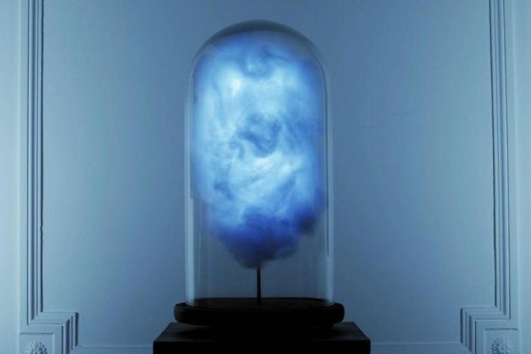
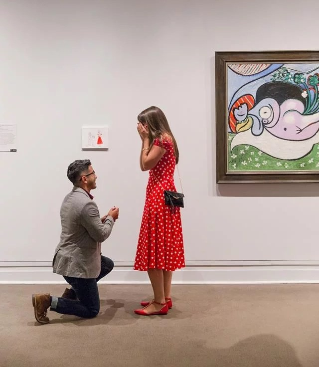

Художник создал «политический светильник»,
реагирующий на твиты Трампа
С тех пор как Дональд Трамп занял свой пост, Twitter стал
источником беспокойства для многих
американцев. Известно, что Трамп, в отличие
от своих предшественников, внезапно объявил
о важных политических решениях и сорвал
международные отношения неожиданным
шквалом твитов.

Французский художник и дизайнер, который
скрывается под необычным псевдонимом Parse/Error,
решил создать «политический светильник»,
реагирующий на все
публикации президента
США в Twitter. Стоит отметить, что лампа имеет форму
грозовой тучи. Обычно она светится мягким синим
цветом, но когда
Трамп помещает твит, свет темнеет,
а молния вспыхивает
через облака.
По словам автора произведения, грозовое
облако сверкает в режиме
реального времени
каждый раз, когда президент США пишет новый твит.
Художник считает,
что Трамп
«олицетворяет очень опасную эпоху, в которой
слова даже одного человека в социальных
сетях
могут поставить под угрозу жизни
сотни тысяч людей».
Мужчина с отверткой напал на картину Гитлера
Неизвестный был возмущен тем,
что картину кисти Адольфа
Гитлера выставили в музее Италии.
Масляная картина,
написанная Адольфом Гитлером,
была атакована неизвестным на выставке
в итальянском
городе Сало. 40-летний посетитель крикнул
«Мерзавец!»
и попытался испортить
полотно отверткой. Стоит
отметить, что работа была
покрыта специальной
защитной патиной и
поэтому не получила сильных
повреждений.
Кураторы выставки попытались задержать
вандала,
однако ему все же удалось
скрыться. В свою очередь, владелец
полотна, коллекционер из Германии, решил не
заявлять в полицию.
Необычное предложение руки и сердца в известном
музее: рискованная, но романтичная идея
Что произойдет, если кто-то попытается
самостоятельно
повесить свое произведение
искусства в одном из самых известных музеев мира? Один
безумно влюблённый решил рискнуть
и сделать сюрприз своей
девушке в нью-йоркском музее Метрополитен.
Крис Нерайн, независимый графический дизайнер из
Нью-Йорка, давно мечтал сделать предложение руки и
сердца своей подруге
Мэрибет в художественном
музее. Но его план стал рискованным, когда парень решил
выставить свое искусство среди экспонатов.
За неделю до похода на выставку Крис все спланировал и
нарисовал
рисунок, на котором он, стоя на одном колене, просит свою
возлюбленную в ярко-красном платье в горошек
выйти за него
замуж в окружении прекрасных произведений
искусства.

По просьбе своей матери и сестры, Мэрибет купила
красное платье в горошек. В тот самый день Крис убедил
девушку надеть это платье на романтическую
прогулку.
Парень знал, что его возлюбленная очень любит работы
знаменитого мастера искусства Пикассо,
поэтому
предложил ей посетить выставку работ
художника в
музее. Пока пара рассматривала
картины, родные
Криса подкрались вперед, повесив картину,
которую
он нарисовал.
Более 30 музеев по всему миру объединяются в
бесплатном приложением, которое
называется
«Shazam for art». Smartify, которое
использует технологию
распознавания
изображений для идентификации
произведений искусства, сканированных через
смартфон, провело
экспериментальные проекты этой
весной с коллекцией Уоллеса, Национальной
портретной галереей в Лондоне и с данными из
Рейксмюсеума в Амстердаме и Музея
Метрополитена в Нью-Йорке.
Проект стартовал в Великобритании и объявил о
новых международных партнерах, включая
Национальную галерею Лондона и Королевскую
академию искусств, Эрмитаж в Санкт-Петербурге и
Дворец Дожей в Венеции.
Приложение на iOS и Android призвано дополнять, а не
конкурировать с физическим
опытом посещения
музея.